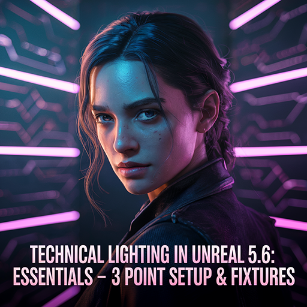
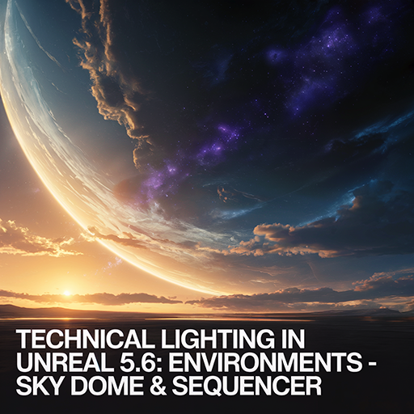
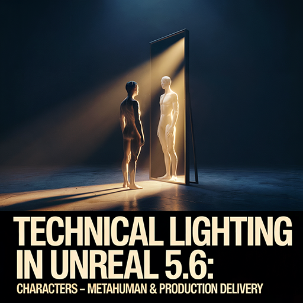

언리얼 5.6 테크니컬 라이팅 : 기초 — 3점 조명 & 라이트 픽스처(Light Fixture)

핵심 학습
-
언리얼 라이트의 타입(Type)과 세팅:
- 포인트(Point)
- 스팟(Spot)
- 렉트(Rect)
- 디렉셔널(Directional)
-
3점 조명
- 키 라이트(Key Light)
- 림 라이트(Rim Light)
- 필 라이트(Fill Light)
-
블루프린트 기본
- 변수(Variable)
- 이벤트(Event)
- 함수(Function)
-
라이트 픽스처(Light Fixture) 블루프린트 제작
- On/Off 스위치 제어
- Intensity · Color 파라미터 조정
결과물
- 3점 조명이 적용된 캐릭터 · 오브젝트 기초 씬
- 라이트 픽스처(Light Fixture) 블루프린트 액터 (스위치 제어, 강도 · 색상 조절 가능)
언리얼 5.6 테크니컬 라이팅 : 환경 — 스카이 돔(Sky Dome) & 시퀀서

핵심 학습
- 스카이 돔(Sky Dome) & 스카이 애트모스피어(Sky Atmosphere) 구축
- 시퀀서(Sequencer)로 카메라 · 라이트 동기화 (이벤트 기반 컷신)
- 블루프린트 타임라인(Timeline) 노드로 밤/낮 전환
- 볼류메트릭 포그(Volumetric Fog), 포스트 프로세스(Post Process) 기초
결과물
- 밤/낮(Day/Night) 전환과 라이트가 동기화된 스카이 돔(Sky Dome)을 활용한 시네마틱 씬
- 시퀀서(Sequencer) 컷씬 (카메라 컷 · 라이트 페이드 이벤트 연동)
언리얼 5.6 테크니컬 라이팅 : 캐릭터 — 메타휴먼 & 프로덕션 딜리버리(Production Delivery)

핵심 학습
-
메타휴먼 라이팅
- 스킨 셰이딩(Skin Shading)
- 아이 스페큘러(Eye Specular) / 캐치라이트(Catchlight)
- 3점 조명 강화 및 캐릭터 최적 세팅
-
메타휴먼 + 시퀀서 연출
- 연기 타이밍에 맞춘 라이트 이벤트
- 컷신 기반 시네마틱 시퀀스 제작
- 컨스트럭션 스크립트(Construction Script)로 라이트 픽스처(Light Fixture) 대규모 배치/관리
- 머티리얼 & 포스트프로세스 파라미터 제어
-
대규모 씬 최적화
- 라이트 채널(Light Channel) 활용
- LOD(Level Of Details) · 컬링(Culling)
- 이벤트 틱(Event Tick) 최소화
-
프로덕션 딜리버리(Production Delivery)
- 언리얼 빌드 및 패키징(Packaging) 설정
- 무비 렌더 큐(Movie Render Queue)로 시네마틱 출력
- 프로덕션 딜리버리(Production Delivery)용 최적화 워크플로우
결과물
- 메타휴먼 시네마틱: 캐릭터 연기(Acting) + 아이 스페큘러(Eye Specular)/캐치라이트(Catchlight) + 라이트/환경 동기화
- 프로덕션 딜리버리(Production Delivery) 산출물: 언리얼 빌드 패키지 & 시네마틱 영상